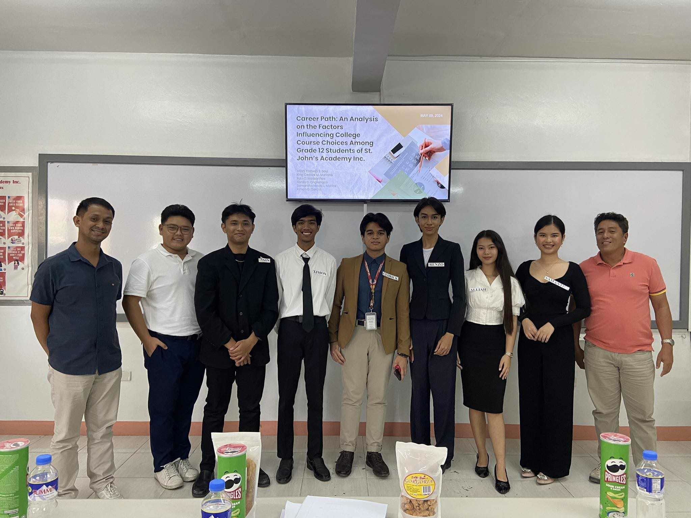
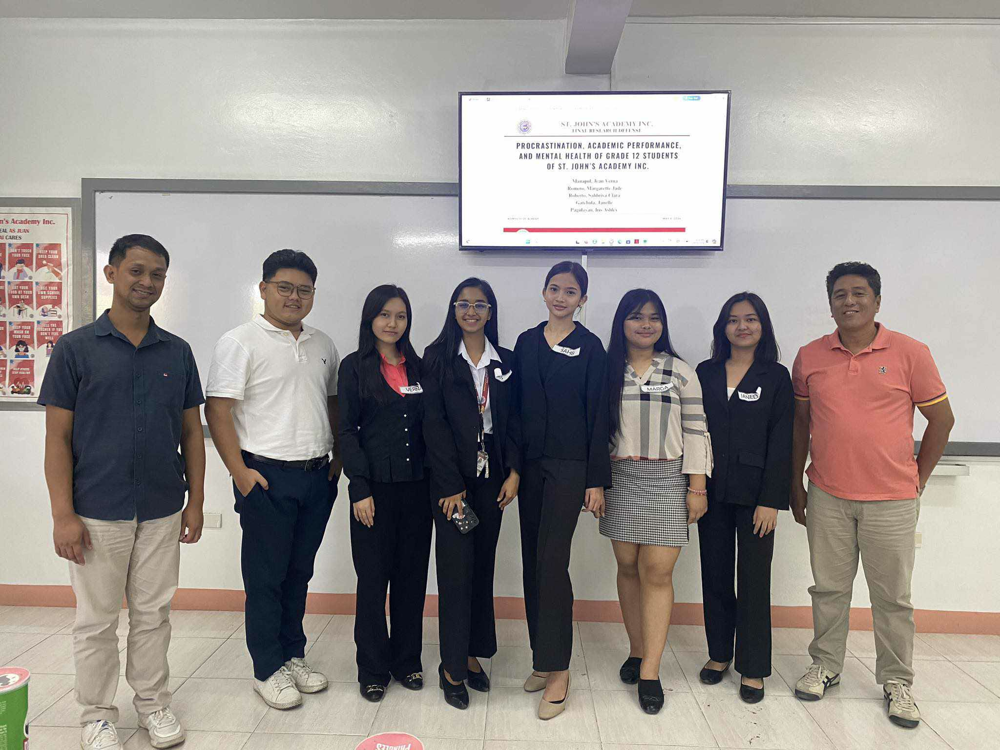
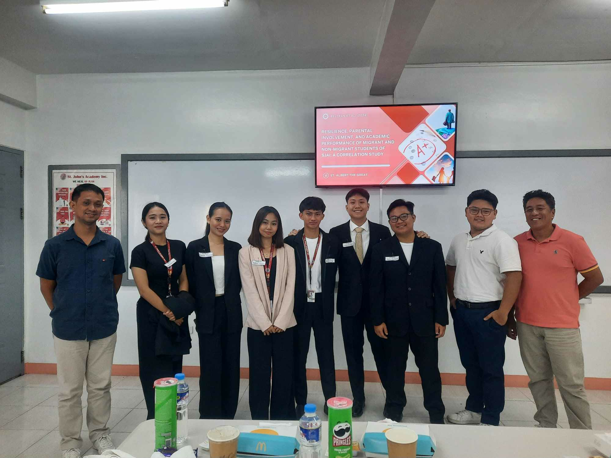
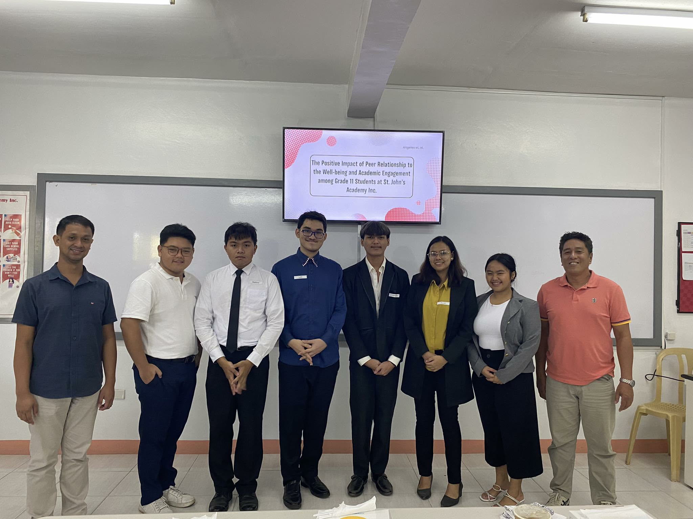

STEM
Research questions called for close attention to variables, procedures, evidence, technical reasoning, and whether the method supported the claim being made.
Reflections · Education & Development · AY 2023-2024
Returning to St. John Academy as Chairperson of the Board of Research Panelists became a different kind of educational experience: listening to student researchers, asking questions that could sharpen their thinking, and helping recognize strong work across STEM, ABM, and HUMSS.
Engagement record
Learn about the invitation, role, academic setting, and contribution.
From the panel room
These photos document research presentations reviewed during the panel engagement at St. John Academy.

A student research presentation examining factors influencing college-course choices among Grade 12 students.

A student research presentation connecting procrastination, academic performance, and mental-health outcomes.

A student research presentation examining resilience, parental involvement, and academic performance among migrant and non-migrant students.

A student research presentation examining the relationship between peer relationships, well-being, and academic engagement.
The invitation
I was invited by St. John Academy to serve as Chairperson of the Board of Research Panelists for Academic Year 2024-2025, sitting across research presentations from the STEM, ABM, and HUMSS strands.
The role placed me on the other side of an experience I had once known as a student: instead of defending the work, I was now responsible for listening closely, examining the logic of a study, asking useful questions, and helping students see both the strengths and the gaps in what they had built.
The work of a panel
A research panel does more than decide whether a paper meets a standard. The better questions are diagnostic: Is the research question clear? Does the method actually answer it? Are the conclusions supported by the evidence? What would make the study more precise, useful, or defensible?
Chairing the panel also meant helping the conversation remain constructive. Critique matters, but so does the way it is delivered. Students should leave a defense understanding what needs improvement without losing sight of what they were able to accomplish.
Across the strands
Serving across STEM, ABM, and HUMSS made comparison especially useful. The subject matter changed, but the discipline of research remained recognizable.
Research questions called for close attention to variables, procedures, evidence, technical reasoning, and whether the method supported the claim being made.
Business-oriented work brought questions of organizations, markets, decision-making, feasibility, stakeholders, and the practical meaning of findings into view.
Humanities and social-science work made context, interpretation, people, culture, institutions, and the relationship between evidence and lived experience especially important.
Across strands, strong research still depended on a clear question, an appropriate method, careful interpretation, honest limits, and the ability to explain why the work mattered.
Best papers
The panel also had the honor of selecting the best paper for each strand and presenting those recognitions to the student researchers.
That part of the experience made evaluation visible in a different way. Recognition was not only about identifying a winner. It was also a way of showing students what careful inquiry, coherent reasoning, methodological discipline, and effective communication can look like when they come together in one piece of work.
Reflection
This engagement extended Education & Development beyond teaching or speaking. It asked for judgment, but also restraint: enough rigor to challenge a study, enough clarity to explain why, and enough respect to remember that a research defense is still part of a student's development.
For me, returning to St. John Academy in this role also made the arc of learning more visible. Research had once been something I was learning to do. Years later, I was being trusted to help younger researchers examine their own work and recognize what strong inquiry could become.
Education & Development
Explore other experiences and academic pieces concerned with learning, development, communication, identity, and growth.
Education & Development →